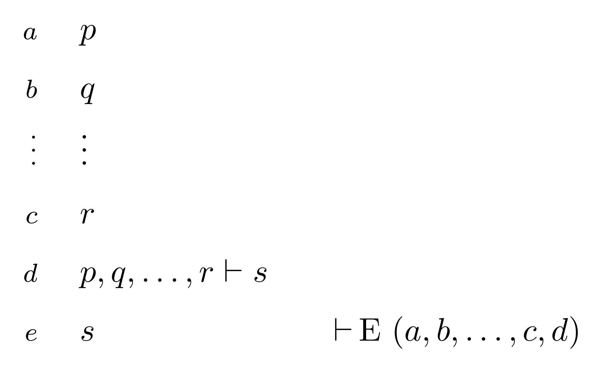

이론
논리식(well-formed formula)을 위한 문맥 자유 언어(context-free language) 의 문법 의 시작 기호(start symbol)을 라 하였을 때, 다음과 같은 문법을 통해 메타언어 을 만들자.
단 는 메타문법을 위한 시작 기호이다. 예를 들어 이 의 문장이라면 이 메타언어의 문장이다. math-o-matic은 어떤 언어 에 대해 그 메타언어 에 Fitch-style natural deduction을 행하며 를 위한 변환 규칙은 다음과 같이 정해져 있다.

| 
|
⊢I 규칙 | ⊢E 규칙 |
예를 들어 weakening의 일종인 은 임의의 공리계에서 다음과 같이 유도할 수 있다.
1 | |- r assumption
+------
2 | | p assumption
3 | | q assumption
| +------
4 | | r |-E (1)
5 | p, q |- r |-I (2–4)
6 (|- r) |- (p, q |- r) |-I (1–5)
우리의 체계가 힐베르트 체계(Hilbert system)나 sequent calculus 등의 다른 체계들과 어떤 관계를 갖는지는 연구되지 않았다. 힐베르트 체계에 대한 표현력은 가질 것으로 보인다.